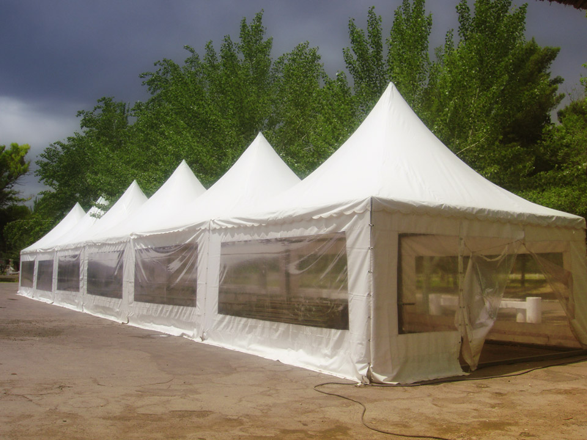
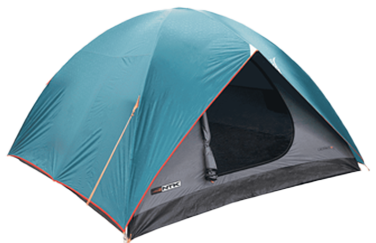

Tipos de carpas
Carpa canadiense o clásica
Es la más tradicional y antigua en diseño. El techo a dos aguas es su principal característica, pero también su gran desventaja, porque el espacio interior se ve reducido en la altura. Generalmente se realizan utilizando materiales muy resistentes y son fuertes en su instalación. Son carpas pesadas pero más resistentes al mal trato por eso son recomendables a la hora de ir de campamento con chicos. A su vez podemos dividirlas en subtipos:
- Sin sobretecho
- Con ábside
La misma no posee sobretecho, lo cual implica mas cuidado con las lluvias, también se las llama tienda de campaña.
Son las canadienses en las cuales el sobretecho, o la carpa en si, cierra la parte trasera de la carpa, tomando la forma de una proa de barco, algunas también se cierran por delante. Este espacio te sirve para guardar mochilas, enseres, etc. También ayuda a cortar los vientos.
Carpas Estructurales
Se caracteriza por su conformación estructural que se compone de tramos, ensambles, codos y ángulos de encastre, los cuales dan fortaleza y forma a toda la estructura. Tiene varios espacios o habitaciones separados, dormitorios, cocina, despensa, etc. Algunas traen baño químico, ducha y otras comodidades. Son muy usadas para crear un espacio protegido para los chicos, aunque la gran desventaja que tiene es su gran peso, y su difícil traslado.
Carpas tipo igloo
Este tipo de carpa hoy en día es la más utilizada y sustituyó a la canadiense por dos factores principales: materiales más livianos y por lo tanto más fáciles de transportar y mejor resistencia a los vientos por su forma, que recuerda a las construcciones de hielo de igual denominación.
Precauciones para armar una carpa
- El sitio donde ubicaremos la carpa debe ser plano y resguardado del viento
- Limpie el lugar de yuyos, malezas, piedras, o ramitas.
- Controle la dirección del viento, la carpa debe estar con su parte trasera en diagonal al mismo para cortar el viento.
- No se debe armar una carpa muy cerca del río, arroyo, etc., ya que el suelo es húmedo y además, en caso de tormenta pueden crecer repentinamente.
- Extienda la carpa, sacando las arrugas.
- Clave las estacas esquineras, en diagonal, sin estirar demasiado, luego las estacas medias, sin tensar demasiado.
- Las estacas de los vientos deben ir a 45°.. En suelos duros, los vientos pueden amarrarse a los árboles o a alguna roca.
Situaciones a evitar
- Ingresar a la carpa con calzado ya que así mantendremos un espacio más limpio y evitaremos dañarla
- Realizar fuego muy cerca de la carpa o ingresar estufas dentro de la misma
- Al guardar la carpa, dejarla húmeda. Debe estar perfectamente seca y limpia, ya que una vez empacada en la bolsa de transporte la humedad producirá un gran deterioro.